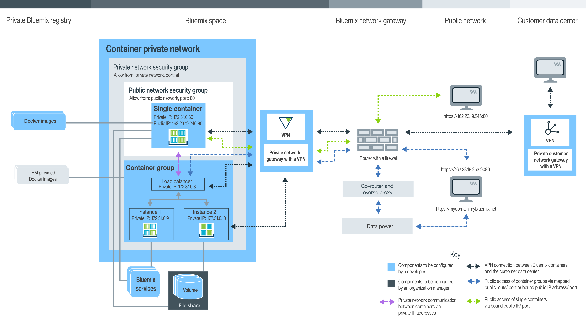

Pianificazione dell'utilizzo di contenitori singoli o scalabili
• Gestisci la tua organizzazione Bluemix per singoli contenitori e gruppi di contenitori scalabili
• Configura uno spazio dei nomi per il tuo registro Bluemix privato
• Quota e tipi di account Bluemix disponibili
• Configurazione dell'archiviazione persistente
• Crea singoli contenitori o gruppi di contenitori scalabili nel servizio IBM Bluemix Container
• GUI, CLI o API REST Bluemix
• Immagini private, Docker Hub e pubbliche IBM
• Impostazioni della rete del contenitore privata
• Impostazioni della rete pubblica
• Integrazione dei servizi Bluemix
• Opzioni di archiviazione di dati persistente
• Tipi di contenitore
• Opzioni di monitoraggio e registrazione
Descrizione dei ruoli utente
I contenitori sono gestiti da gestori organizzazione e sviluppatori di contenitori. La seguente immagine mostra una configurazione del contenitore di esempio di un'organizzazione ed evidenzia i componenti che possono essere configurati dal gestore dell'organizzazione o dallo sviluppatore del contenitore. 
Rivedi le sezione secondarie in questo argomento per trovare le informazioni su ogni componente e decisione e sulle configurazioni che puoi effettuare. Alcune di queste configurazioni non possono essere modificate dopo la creazione di un contenitore. Conoscere queste configurazioni in anticipo ti assicura che tutte le risorse, come la memoria, lo spazio su disco e gli indirizzi IP siano disponibili per il team di sviluppo così come di massimizzare l'utilizzo della tua quota dell'organizzazione.Gestione della tua organizzazione Bluemix per IBM Bluemix Container Service
In Bluemix, puoi utilizzare le organizzazioni per abilitare la collaborazione tra i membri del team e per facilitare il raggruppamento logico delle risorse cloud in un progetto. Ad ogni organizzazione è assegnato un gestore dell'organizzazione che è responsabile della configurazione gli ambienti (spazi) di sviluppo e per concedere l'accesso alle risorse cloud ai membri del team che devono creare correttamente dei contenitori per le loro applicazioni. Questa configurazione include l'assegnazione di indirizzi IP pubblici, archivio dati e memoria del contenitore. Come gestore dell'organizzazione puoi inoltre visualizzare la quota corrente e l'utilizzo delle risorse cloud e modificarle se necessario.
- Assegna i gestori dell'organizzazione fornendo a un utente il ruolo di gestore nell'organizzazione.
- Assegna i creatori del contenitore fornendo a un utente un ruolo di sviluppatore o revisore nello spazio.
Configurazione dello spazio dei nomi dell'organizzazione per il tuo registro Bluemix privato
Per archiviare e gestire le immagini private per IBM Bluemix Container Service, a ogni organizzazione è richiesto di configurare il proprio registro delle immagini Docker privato in Bluemix. Questo nome del registro privato è denominato con uno spazio dei nomi e deve essere univoco in Bluemix.
Considera le seguenti regole quando scegli uno spazio dei nomi per la tua organizzazione.
- Il tuo spazio dei nomi deve essere univoco in Bluemix.
- Il tuo spazio dei nomi deve essere compreso tra i 4-30 caratteri.
- Il tuo spazio dei nomi deve iniziare con almeno una lettera o un numero.
- Il tuo spazio dei nomi può contenere solo lettere minuscole, numeri o caratteri di sottolineatura (_).
Dalla GUI Bluemix, segui la procedura di seguito indicata.
Dalla CLI, esegui il seguente comando dopo aver eseguito l'accesso a IBM Bluemix Container Service:
Richiamo dello spazio dei nomi per la tua organizzazione
Se uno spazio dei nomi per la tua organizzazione è già stato impostato, puoi richiamarlo dalla GUI Bluemix o dalla CLI.
Dalla GUI Bluemix, segui la procedura di seguito indicata.
Dalla CLI, accedi al servizio IBM Bluemix Container Service ed esegui il seguente comando.
Quota e account Bluemix
Ogni organizzazione in Bluemix ha un valore preimpostato per la memoria del contenitore, per gli indirizzi IP, per le condivisioni file e per il numero di servizi condivisi in tutti gli spazi di un'organizzazione. Questi valori preimpostati vengono chiamati quota.
Tipi di account Bluemix
| Tipo di account | Descrizione |
|---|---|
| Prova gratuita | Le versioni di prova gratuita per contenitori singoli o scalabili non sono disponibili. Informazioni sulla gestione e migrazione dei cluster a Kubernetes in IBM Bluemix Container Service su Bluemix pubblico. |
| Pagamento a consumo | Se ti registri per un account Pagamento a consumo, paghi solo per le risorse Bluemix di cui fai uso. |
| Sottoscrizione | Se ti registri per un account Sottoscrizione, ti impegni a un importo di spesa minimo ogni mese e ricevi uno sconto sulla sottoscrizione che viene applicato a tale addebito minimo. Puoi anche pagare per qualsiasi utilizzo che ecceda l'importo di spesa minimo. |
| Bluemix dedicato | Con Bluemix dedicato, devi registrarti per un periodo minimo di un anno. Quello che paghi ogni mese durante questo periodo è basato sui servizi dedicati che vuoi, più un account di sottoscrizione che ti dà accesso a tutti i servizi pubblici. |
| Bluemix locale | Con Bluemix locale, devi registrati per un periodo minimo di un anno. Quello che paghi ogni mese durante questo periodo è basato sui servizi locali che vuoi, più un account di sottoscrizione che ti dà accesso a tutti i servizi pubblici. |
La quota predefinita per gli account a pagamento
| Risorsa | Limiti di quota per gli account a pagamento |
|---|---|
| Indirizzi IP pubblici | 64 |
| Memoria del contenitore | 64 GB Nota: Ogni contenitore nel tuo spazio contribuisce all'utilizzo della quota,
sia che il contenitore sia in esecuzione o meno. Per liberare memoria, devi rimuovere i contenitori non utilizzati.
|
| Condivisioni file | 10 condivisioni file |
| Contenitori e gruppi di contenitori | numero illimitato Nota: La dimensione del contenitore e dei gruppi di contenitori viene conteggiata
dal tuo limite di memoria del contenitore ma non sei limitato a un numero specifico di contenitori.
|
| Immagini | 25 Nota: Le immagini IBM non fanno parte del tuo limite di immagini
nel tuo registro Bluemix
privato.
|
| Spazi | numero illimitato Nota: Ogni spazio richiede almeno 2 indirizzi IP pubblici e 2 GB di memoria contenitore
che vengono automaticamente allocati quando accedi a un nuovo spazio
e tenti di utilizzarlo con IBM
Bluemix Container Service. Questo numero di risorse
viene conteggiato nella tua quota ma non sei limitato a un numero specifico di contenitori.
|
Assegnazione della quota a uno spazio
- Dai dettagli dell'account, nella gestione delle organizzazioni, seleziona un'organizzazione.
- Nella sezione della quota, visualizza i dettagli per i contenitori.
- Nella tabella Allocazione quota, modifica la quota allocata per spazio facendo clic sul pulsante Modifica.
- Salva le tue modifiche facendo clic sul pulsante Salva.
Suggerimenti per massimizzare l'utilizzo della quota
- Assicurati di rimuovere i contenitori non in uso in modo che le loro configurazioni non vengano conteggiate nella tua quota. Per ulteriori informazioni, consulta Rimozione di singoli contenitori, Rimozione dei gruppi di contenitori e Rimuovi un'applicazione con più contenitori.
- Non associare un indirizzo IP pubblico al tuo contenitore quando il tuo contenitore non deve essere accessibile da internet.
- Per ridurre l'utilizzo dell'indirizzo IP pubblico, considera di utilizzare i gruppi di contenitori al posto di un singolo contenitore. I gruppi Cdi contenitori utilizzano una rotta per l'accesso pubblico che non è soggetta alla quota dell'indirizzo IP. Per ulteriori informazioni, vedi Esecuzione dei servizi a lungo termine come i gruppi di contenitori dalla GUI Bluemix.
Archivio di dati persistenti
Il gestore dell'organizzazione può creare condivisioni file con dimensione di archiviazione specifica e IOPS per soddisfare l'archiviazione necessaria dello spazio. Può essere eseguito il provisioning delle condivisioni file nelle dimensioni comprese tra 20 GB e 12 TB e con IOPS per GB di 0.25, 2 o 4. La dimensione della condivisione file in relazione al numero di IOPS influisce sulla velocità di lettura e scrittura dei dati da/a un volume del contenitore.
Creazione dei tuoi contenitori con IBM Bluemix Container Service in Bluemix
Per creare i contenitori che eseguono la tua applicazione con IBM Bluemix Container Service in Bluemix, ti devono essere stati concessi i diritti da sviluppatore per uno spazio dell'organizzazione. Come sviluppatore delle applicazioni, è importante conoscere come sono correlati i componenti del contenitore e come puoi modificare la configurazione di un contenitore in modo che soddisfi i requisiti funzionale e non funzionale della tua applicazione.
GUI Bluemix, la riga di comando e l'API REST
Quando stai pianificando di lavorare con IBM Bluemix Container Service, puoi utilizzare la GUI Bluemix, installare la CLI (command line interface) o inviare le richieste HTTP all'API REST per accedere a IBM Bluemix Container Service.
La GUI Bluemix e la CLI possono essere utilizzati per completare la maggior parte delle attività in IBM Bluemix Container Service. Tuttavia, ci sono alcune attività che possono essere eseguite solo dalla GUI Bluemix o dalla CLI. Quindi preparati ad utilizzare entrambi per gestire i tuoi contenitori.
Se non desideri utilizzare ne la GUI Bluemix ne la CLI, puoi inviare le richieste HTTP direttamente al server API IBM Bluemix Container Service per gestire i tuoi contenitori con REST.
La seguente tabella mostra tutte le attività correlate al contenitore che richiedono la GUI Bluemix, la CLI IBM Bluemix Container Service o l'API REST. Le attività che non sono qui elencate possono essere eseguite da tutti i metodi.| Attività | GUI | CLI | API |
|---|---|---|---|
| Riesamina le vulnerabilità dell'immagine |  |
 |
|
| Invio delle immagini al registro | |
|
|
| Trasmissione delle immagini dal registro | |
|
|
| Copia delle immagini da Docker Hub | |
|
|
| Modifica dell'assegnazione della quota | |
|
|
| Richiamo della quota specifica dello spazio e dell'organizzazione | |
|
|
| Visualizzazione delle informazioni di log dettagliate | |
|
|
| Specifica di più log | |
|
|
| Personalizzazione dei log | |
|
|
| Accesso a un contenitore in esecuzione | |
|
|
| Utilizzo di Docker Compose | |
|
|
| Elenco dei volumi di uno spazio | |
|
|
| Scrittura dei file in un volume | |
|
|
| Eliminazione di un volume | |
|
|
| Richiamo dei messaggi di sistema | |
|
|
Installazione della CLI
Installa e configura la tua CLI IBM Bluemix Container Service per gestire i tuoi contenitori dalla CLI.
Gestione dei contenitori tramite l'API REST
Utilizza l'API IBM Bluemix Container Service per utilizzare i singoli contenitori e i gruppi di contenitori utilizzando REST.
Immagini IBM pubbliche, Docker Hub e private
Un'immagine del contenitore è la base per ogni contenitore che crei. Viene creata un'immagine da un Dockerfile, che è un file che contiene le istruzioni per creare l'immagine e le risorse utente, come un'applicazione, la configurazione dell'applicazione e le relative dipendenze. Pensa all'immagine del contenitore come a un file eseguibile (.exe o .bin). Appena avrai eseguito il file dell'applicazione, avrai creato un'istanza della tua applicazione. Quando esegui un contenitore, crei un'istanza del contenitore dall'immagine. Le immagini del contenitore vengono archiviate nel tuo registro Bluemix privato e possono essere aggiunte solo dalla CLI. Ogni immagine del contenitore che desideri utilizzare deve essere presente in un registro prima di poter creare un contenitore da essa.
- Immagini pubbliche IBM
- Inizia utilizzando una delle Immagini IBM pubbliche fornite da IBM Bluemix Container Service, come le immagini IBM Liberty e IBM Node per verificare le funzioni di IBM Bluemix Container Service. Quindi, puoi utilizzare una di queste immagini come immagine parent, per modificare il Dockerfile e creare una tua propria immagine con il tuo proprio codice dell'applicazione.
- Immagini da Docker Hub
- Copia le immagini direttamente da Docker Hub nel tuo registro Bluemix privato o trasmetti un'immagine da Docker Hub, modificala localmente e quindi creala direttamente nel tuo registro.
- Crea la tua propria immagine
- Se disponi di immagini del contenitore che già utilizzi nel tuo ambiente Docker locale, puoi eseguirne il push al tuo registro Bluemix privato per utilizzarle in IBM Bluemix Container Service. Puoi inoltre creare il tuo proprio Dockerfile, crearlo e verificarlo localmente e quindi eseguirne il push al tuo registro delle immagini privato.
Visualizzazione delle immagini nel tuo registro delle immagini privato
Puoi visualizzare tutte le immagini contenitore disponibili nel tuo registro delle immagini Bluemix privato utilizzando la GUI Bluemix o la CLI.
- Dalla GUI Bluemix, seleziona il catalogo e quindi Containers. Puoi visualizzare le immagini fornite da IBM e le immagini che sono state precedentemente trasmesse al tuo registro Bluemix privato.
- Dalla CLI , esegui bx ic images.
Riesame delle vulnerabilità dell'immagine
Quando aggiungi delle immagini al tuo registro Bluemix privato, ne viene automaticamente eseguita la scansione dal Controllo vulnerabilità con le politiche standard impostate dal gestore dell'organizzazione e con un database di problemi noti Ubuntu. Il Controllo vulnerabilità controlla i pacchetti di inventario, le configurazioni, le porte aperte e i metadati Docker. Una volta completata la scansione, puoi riesaminare un elenco delle potenziali vulnerabilità e occupartene come necessario prima di utilizzare l'immagine in un contenitore. In base alle politiche impostate dal gestore dell'organizzazione, la distribuzione di un contenitore da tale immagine può essere bloccata o può essere visualizzata un'avvertenza all'utente.
- Per elencare le vulnerabilità dell'immagine, vedi Controllo di un report dell'immagine.
- Per configurare le politiche personalizzate nella tua organizzazione, vedi Controllo delle politiche organizzative.
Suggerimenti del Dockerfile per prevenire l'arresto di un contenitore
IBM Bluemix Container Service offre varie funzioni per mantenere i contenitori sicuri e gestire le risorse cloud per l'utente. A seconda della tua applicazione, potrebbe essere necessario aggiungere ulteriori configurazione al tuo Dockerfile per assicurare ai tuoi contenitori locali di essere eseguiti correttamente in Bluemix.
- Prepara per i ritardi di rete
- Quando si avvia il contenitore, IBM Bluemix Container Service configura la rete del contenitore privata e assegna un indirizzo IP privato al contenitore. Questo processo può richiedere qualche secondo. Se la tua applicazione richiede una connessione di rete attiva nel momento in cui viene avviata l'applicazione, accertati che il collegamento di rete IBM Bluemix Container Service sia terminato prima di aggiungere un comando di sospensione al tuo Dockerfile.
- Utilizzo dei comandi a lunga esecuzione
- Per mantenere in esecuzione almeno un processo di lungo termine in un contenitore è necessario che sia incluso in un'immagine del contenitore. Ad esempio, echo "Hello world" è un processo di breve esecuzione. Se nessun altro comando viene specificato nell'immagine, il contenitore si arresta dopo che il comando è stato eseguito. Per trasformare il comando echo "Hello world" in un processo di lunga esecuzione, puoi, ad esempio, eseguirlo più volte o includere il comando echo in un altro processo di lunga esecuzione nella tua applicazione.
Impostazioni della rete privata del contenitore in IBM Bluemix Container Service
Una rete privata del contenitore crea un ambiente sicuro e isolato per i singoli contenitori e gruppi di contenitori in esecuzione su uno spazio. I contenitori collegati alla stessa rete privata possono inviare e ricevere dati da altri contenitori nella rete privata utilizzando gli indirizzi IP privati. I contenitori non sono disponibili pubblicamente finché non sono associati una porta pubblica e un indirizzo IP pubblico per i singoli contenitori o una rotta pubblica per i gruppi di contenitori.
- Impostazioni della rete privata predefinite IBM Bluemix Container Service
- In Bluemix, ad ogni spazio è già fornita una rete pubblica che applica le impostazioni di rete IBM Bluemix Container Service predefinite. Queste configurazioni includono la configurazione automatica di un Network Security Group privato che consente la comunicazione di rete privata tra i contenitori e i gruppi di contenitori utilizzando un indirizzo IP privato. Quando crei un contenitore o un gruppo di contenitori, essi vengono automaticamente collegati alla rete privata IBM Bluemix Container Service e assegnati a un indirizzo IP privato dalla sottorete 172.31.0.0/16. Dopo l'assegnazione di un indirizzo IP privato, tutti i contenitori nella stessa rete possono comunicare in modo sicuro su tutte le porte del contenitore utilizzando l'indirizzo IP privato del singolo contenitore, o, se si utilizza un gruppo di contenitori, l'indirizzo IP privato del programma di bilanciamento del carico del gruppo. Non è necessaria alcuna associazione delle porte del contenitore a un porta host.
- VPN (Virtual Private Network) per collegare i tuoi contenitori al data center aziendale
- Collegare in modo sicuro i singoli contenitori e gruppi di contenitori in una rete di contenitori privata
in Bluemix a un data center aziendale
utilizzando il servizio IBM® VPN (Virtual Private Network). IBM
VPN fornisce un canale di comunicazione end-to-end sicuro
in internet che si basa sulla suite del protocollo IPsec
(industry-standard Internet Protocol Security). Il protocollo IPsec offre un'autenticazione peer al livello della rete, l'integrità dei dati
e la confidenzialità dei dati con la crittografia dei pacchetti scambiati tra gli endpoint VPN. Per configurare
una connessione sicura tra i contenitori in Bluemix e il data center aziendale, devi
avere un gateway IPsec VPN o un server SoftLayer installato nel tuo data center in loco. Con il servizio
IBM
VPN, puoi configurare un gateway VPN
per spazio e definire fino a 16 connessioni a destinazioni differenti.
Per configurare una connessione VPN sicura ai tuoi contenitori in Bluemix, consulta IBM VPN.
Suggerimenti per gestire i ritardi di rete durante l'avvio di un contenitore
Quando si avvia il contenitore, IBM Bluemix Container Service configura la rete del contenitore privata, espone le porte del contenitore e assegna un indirizzo IP privato al contenitore. Questo processo può richiedere qualche secondo. Se la tua applicazione richiede una connessione di rete attiva nel momento in cui viene avviata l'applicazione, la rete privata del contenitore potrebbe non essere ancora configurata, il che può comportare l'arresto anomalo dell'applicazione. Per assicurarti che la connessione di rete IBM Bluemix Container Service sia terminata prima che l'applicazione venga avviata, considera di implementare una delle seguenti soluzioni per gestire i ritardi di rete.
- Aggiungi un comando di sospensione al tuo Dockerfile che venga eseguito quando viene avviato il contenitore.
Nel seguente Dockerfile di esempio, il contenitore attende per 60 secondi prima che l'applicazione venga avviata.
FROM sdelements/lets-chat:latest CMD (sleep 60; npm start) - Modifica il tuo codice dell'applicazione per controllare una connettività di rete attiva, ad esempio, eseguendo il ping a un indirizzo IP pubblico prima dell'avvio dell'applicazione. Se non puoi eseguire il ping all'indirizzo IP, sospendi per alcuni secondi e quindi riprova. Se l'indirizzo IP può essere risolto, avvia l'applicazione.
Determinazione delle impostazioni della rete pubblica
Per impostazione predefinita, ogni contenitore singolo e gruppo di contenitori in IBM Bluemix Container Service è disponibile per la rete privata. Tuttavia, la tua applicazione può richiedere l'accessibilità da internet o puoi desiderare di accedere ai contenitori in altri spazi della tua organizzazione. In questi casi, devi esporre il tuo contenitore al pubblico. A seconda del tipo di contenitore che hai scelto, esistono diversi modi per rendere un contenitore disponibile al pubblico.
Contenitori singoli e impostazioni della rete pubblica Docker Compose
A tutti i contenitori singoli che hai creato nel tuo spazio viene assegnato un indirizzo IP privato che puoi utilizzare per accedere ai contenitori solo dalla rete privata. La comunicazione di rete privata è protetta dal Network Security Group privato predefinito che non consente alcun traffico di rete sia in entrata che in uscita da un rete pubblica. Se desideri rendere la tua applicazione disponibile nella rete pubblica, devi esporre un porta pubblica ed associare un indirizzo IP pubblico al tuo contenitore.
È necessario richiedere gli indirizzi IP pubblici per uno spazio da associare a un contenitore. Quando si richiede un indirizzo IP pubblico, ne viene assegnato uno in automatico dal pool di indirizzi IP allo spazio. Mentre viene assegnato a uno spazio, l'indirizzo IP non viene modificato. Per associare un indirizzo IP pubblico a un contenitore, devi anche esporre una porta HTTP utilizzando l'opzione -p nel comando bx ic run. L'esposizione di una porta, crea un gruppo di sicurezza di rete pubblico per il tuo contenitore che ti consente di inviare e ricevere dati pubblici solo nella porta esposta. Tutte le altre porte pubbliche sono chiuse e non possono essere utilizzate per accedere alla tua applicazione da internet.
Il numero di indirizzi IP pubblici disponibili per uno spazio dipende dalla tua quota dell'organizzazione.
bx ic ips- Nessun indirizzo IP pubblico è disponibile nello spazio
- Output CLI:
IP Address Container ID - Opzioni personali:Richiedi un nuovo indirizzo IP pubblico e associalo al contenitore.
bx ic ip-requestbx ic ip-bind <IP_ADDRESS> <CONTAINER>
- Output CLI:
- Un indirizzo IP pubblico è disponibile nello spazio e non è associato a un contenitore
- Output CLI:
IP Address Container ID 192.0.2.56 - Opzioni personali:Esegui il bind dell'indirizzo IP pubblico al tuo contenitore.
bx ic ip-bind <IP_ADDRESS> <CONTAINER>
- Output CLI:
- Un indirizzo IP pubblico è disponibile nello spazio ma è già associato a un contenitore
- Output CLI:
IP Address Container ID 192.0.2.56 d7b4a167-8e51-4b16-b591-1a17cb7ee41f - Opzioni personali:
- Annulla l'associazione dell'indirizzo IP da un contenitore e associalo
a un nuovo contenitore.
bx ic ip-unbind <IP_ADDRESS> <CONTAINER>bx ic ip-bind <IP_ADDRESS> <CONTAINER> - Richiedi un nuovo indirizzo IP pubblico e associalo al contenitore.
bx ic ip-requestbx ic ip-bind <IP_ADDRESS> <CONTAINER>
- Annulla l'associazione dell'indirizzo IP da un contenitore e associalo
a un nuovo contenitore.
- Output CLI:
Impostazioni della rete pubblica del gruppo di contenitori
Per rendere il tuo gruppo di contenitori accessibile da internet, devi esporre una porta e associare una rotta pubblica o un indirizzo IP pubblico ad essa.
- Rotta pubblica con dominio predefinito
- Una rotta pubblica è formata da un host e un nome del dominio e compone l'URL pubblico completo
che devi immettere nel tuo browser web per accedere al gruppo di contenitori. Ogni rotta deve essere univoca in
Bluemix.
Puoi scegliere un nome host per la tua rotta, come mycontainerhost durante la creazione del contenitore. Il dominio di sistema predefinito è AppDomainName e fornisce già un certificato SSL, per cui puoi accedere al tuo gruppo di contenitori con HTTPS senza alcuna ulteriore configurazione.
Esempio: https://mycontainerhost.AppDomainName
Nota: Per utilizzare una rotta pubblica, devi esporre una porta HTTP per il tuo gruppo di contenitori durante la creazione. Le porte non HTTP non possono essere esposte pubblicamente. Puoi esporre solo una porta pubblica per contenitore. Più porte pubbliche per un gruppo di contenitori non sono supportate. - Rotta pubblica con dominio personalizzato
- Se desideri utilizzare il tuo proprio dominio personalizzato invece del dominio predefinito AppDomainName,
devi registrare il dominio pubblico su un server DNS pubblico, configurare il dominio personalizzato in Bluemix e quindi associare il dominio personalizzato al dominio di sistema
Bluemix nel server DNS pubblico. Dopo aver associato il tuo dominio personalizzato al dominio di sistema Bluemix,
le richieste per il tuo dominio personalizzato vengono instradate alla tua applicazione in Bluemix. Quando crei un dominio personalizzato, non includere caratteri di sottolineatura (_) nel nome del dominio.
Per creare dei domini personalizzati, consulta Creazione e utilizzo di un dominio personalizzato.
Per rendere sicuro il tuo dominio personalizzato, carica un certificato SSL in modo che sia possibile accedere ai gruppi di contenitori con HTTPS.
- Indirizzo IP pubblico
- Puoi anche eseguire il bind di un indirizzo IP durante la creazione
di un gruppo di contenitori con la riga di comando. Puoi solo eseguire il bind di una rotta pubblica o a un indirizzo IP variabile a un contenitore,
non entrambi. Per rimuovere un indirizzo IP da un gruppo di contenitori, devi rimuovere il gruppo di contenitori
e ricrearlo.Esempio di creazione di un gruppo di contenitori con un indirizzo IP pubblico:
bx ic group-create -p 9080 --ip 192.0.2.56 --name mio_gruppo_di_contenitori registry.DomainName/ibmliberty
Integrazione di servizi Bluemix da utilizzare con i contenitori
Bluemix offre vari servizi che puoi utilizzare con IBM Bluemix Container Service per ottenere ulteriori funzionalità per la tua applicazione o per semplificare l'implementazione della tua applicazione e la gestione del tuo contenitore.
- Dall'interfaccia utente di Bluemix , seleziona il Catalogo Bluemix.
- Dalla CLI, esegui il comando cf marketplace.
Per trovare informazioni sui servizi che ti aiutano nella gestione dei tuoi contenitori, consulta Integrazione di servizi con contenitori singoli o scalabili.
Opzioni di archivio di dati persistenti
Decidi dove memorizzare i dati creati dall'applicazione o i file che l'applicazione richiede di eseguire.
| Opzioni di archiviazione dati | Descrizione | La quantità di dati che è possibile memorizzare è limitata da |
|---|---|---|
| Opzione 1: memorizzare i dati nel contenitore durante il runtime | Con questa opzione, non devi conservare i dati dell'applicazione. I dati sono disponibili per il contenitore solo durante il runtime. Quando un contenitore viene ricreato, tutti i dati vengono persi. | Dimensione del contenitore |
| Opzione 2: memorizzare i dati in un volume del contenitore | Quando monti un volume in Docker, il volume viene montato nel tuo
file system locale. In IBM
Bluemix Container Service, l'accesso al nodo di calcolo
è limitato, per cui non puoi montare le directory host in un contenitore. Invece, sono utilizzati i volumi
nell'ambito dell'organizzazione per conservare i dati tra i riavvi del contenitore. I volumi sono ospitati
su condivisioni file isolate che archiviano in sicurezza i dati dell'applicazione e gestiscono l'accesso e l'autorizzazione
ai file. A causa di questo isolamento,
agli utenti non root nel contenitore deve essere concessa l'autorizzazione di scrittura
per il volume montato. Con questa opzione, puoi conservare i dati e accedervi tra i riavvi del contenitore e condividerli tra i contenitori in uno spazio. Quando un contenitore viene eliminato, il volume associato non viene rimosso. Nota: Per montare un volume in un contenitore, devi prima crearne uno, consulta Crea un volume con la GUI
Bluemix.
|
Dimensione della condivisione file che ospita il volume |
| Opzione 3: collegare il tuo contenitore a un database in loco | Con questa opzione, puoi conservare i dati e accedervi in un database in loco utilizzando una connessione VPN sicura tra i tuoi contenitori nel cloud e il tuo ambiente locale. | Spazio disco disponibile per il database in loco |
| Opzione 4: associare un servizio database Bluemix al tuo contenitore. | Con questa opzione, puoi conservare i dati e accedervi utilizzando un servizio database collegato al tuo contenitore nel cloud. Alcuni servizi database Bluemix forniscono spazio su disco per una piccola quantità di dati gratuitamente, in questo modo puoi verificarne le funzioni. | Servizio database e pianificazione della tua scelta |
Gli utenti non root accedono ai volumi del contenitore in Bluemix
Per IBM Bluemix Container Service, la funzione dello spazio dei nomi dell'utente è abilitata per Docker Engine. Gli spazi dei nomi dell'utente forniscono isolamento in modo che l'utente root del contenitore non può concedere l'accesso ad altri contenitori o all'host di calcolo. Tuttavia, i volumi sono su condivisioni file NFS esterne agli host di calcolo del contenitore. I volumi sono configurati per riconoscere l'utente root nel contenitore ma poiché i volumi sono esterni al contenitore non sono ignorati dagli spazi dei nomi dell'utente.
Per alcune applicazioni, solo l'utente all'interno di un contenitore è l'utente root. Tuttavia, molte applicazioni specificano un utente non root che scrive nel percorso di montaggio del contenitore. Se stai progettando un'applicazione con un utente non root che richiede l'autorizzazione di scrittura nel volume, devi aggiungere i seguenti processi al tuo Dockerfile e al tuo script di punto di ingresso:
- Creare un utente non root.
- Aggiungere temporaneamente l'utente al gruppo root.
- Creare una directory nel percorso di montaggio volume con le autorizzazioni utente corrette.
Per ulteriori informazioni, consulta crea il tuo proprio Dockerfile con le autorizzazioni in scrittura appropriate.
Tipi di contenitore
Prima di creare un contenitore con IBM Bluemix Container Service, decidi il tipo di contenitore di cui hai bisogno. IBM Bluemix Container Service offre diversi approcci per la creazione dei contenitori nel cloud. L'approccio che scegli dipende dai requisiti e dalle dipendenze della tua applicazione che viene eseguita nel tuo contenitore.
Singolo contenitore
Un contenitore singolo in IBM Bluemix Container Service è simile al contenitore che hai creato nel tuo ambiente Docker locale. I contenitori singoli sono un modo valido di iniziare ad utilizzare IBM Bluemix Container Service e per imparare come i contenitori funzionano nel cloud IBM e le funzioni fornite da IBM Bluemix Container Service. Puoi anche utilizzare i contenitori singoli per eseguire test dell'applicazione semplici o durante il processo di sviluppo di un'applicazione. Poiché un singolo cluster può essere riavviato e non è previsto che ospiti un programma a lunga esecuzione, devi utilizzare un gruppo di contenitori che le applicazioni che richiedono un'elevata disponibilità.
- La dimensione dell'immagine ha un impatto significativo. Più è piccola l'immagine, più è veloce la distribuzione.
- Dopo le prime poche volte che viene distribuita un'immagine, le velocità di distribuzione migliorano. Inizialmente, l'immagine deve essere scaricata nel registro sull'host. Le seguenti distribuzioni sono più veloci.
- La configurazione della rete potrebbe richiedere alcuni minuti.
- Un singolo contenitore viene distribuito più velocemente rispetto a un gruppo di contenitori a causa della configurazione dell'instradamento dei gruppi.
- Le distribuzioni con i contenitori collegati non possono essere veloci come le altre distribuzioni a causa delle connessioni che devono essere effettuate.
Per creare un singolo contenitore dalla GUI Bluemix, consulta Esecuzione di attività a breve termine come singoli contenitori.
Per creare un singolo contenitore dalla CLI, consulta Esecuzione di attività a breve termine come i contenitori singoli con la CLI (command line interface).
Gruppi di contenitori
Un gruppo di contenitori è composto da più contenitori singoli, che vengono tutti creati dalla stessa immagine del contenitore e di conseguenza sono configurati nello stesso modo.
Un gruppo di contenitori offre ulteriori opzioni gratuite per rendere la tua applicazione altamente disponibile.
- Bilanciamento del carico integrato
- Anti-affinità per espandere le istanze del contenitore a più nodi di calcolo fisici
- Ripristino automatico delle istanze del gruppo di contenitori non integre
- Auto-scaling delle istanze del gruppo di contenitori in base all'utilizzo della CPU e della memoria
- Crea un secondo gruppo di contenitori nello stesso spazio .
- Espandi i gruppi di contenitori a più ubicazioni utilizzando le zone di disponibilità IBM Bluemix Container Service.
- Espandi i gruppi di contenitori a più regioni Bluemix.
- La dimensione dell'immagine ha un impatto significativo. Più è piccola l'immagine, più è veloce la distribuzione.
- Dopo le prime poche volte che viene distribuita un'immagine, le velocità di distribuzione migliorano. Inizialmente, l'immagine deve essere scaricata nel registro sull'host. Le seguenti distribuzioni sono più veloci.
- La configurazione della rete potrebbe richiedere alcuni minuti.
- Un singolo contenitore viene distribuito più velocemente rispetto a un gruppo di contenitori a causa della configurazione dell'instradamento.
- Un gruppo di contenitori non associato a una rotta viene distribuito più velocemente di uno senza.
- I gruppi di contenitori senza l'anti-affinità abilitata sono più veloci dei gruppi di contenitori con l'anti-affinità. Con l'anti-affinità, il numero di host specificato deve scaricare ogni livello dell'immagine.
Per creare un gruppo di contenitori dalla GUI Bluemix, rivedi l'argomento Esegui un gruppo di contenitori dalla GUI Bluemix.
Per creare un gruppo di contenitori dalla CLI, consulta Esegui un gruppo di contenitori dalla CLI.
Bilanciamento del carico per un gruppo di contenitori
I gruppi di contenitori forniscono un bilanciamento del carico integrato che instrada il traffico in entrata uniformemente (round-robin) alle istanze del contenitore nel gruppo. Quando un gruppo di contenitori viene creato oppure quando a un gruppo esistente vengono aggiunte delle istanze, indipendentemente dal fatto che sia tu stesso ad aggiungere le istanze o che invece un'istanza venga ricreata durante un ripristino automatico, il bilanciamento del carico è abilitato.

- A : gruppo di contenitori con tre istanze
- B : programma di bilanciamento del carico per il gruppo di contenitori
- 1, 2, 3 : istanze nel gruppo di contenitori
Dopo aver aggiunto una nuova istanza al gruppo di contenitori, il programma di bilanciamento del carico stabilisce una connessione socket TCP per determinare quando iniziare a inviare traffico alla nuova istanza del contenitore. Appena l'istanza del contenitore inizia a essere in ascolto sulla sua porta definita, il programma di bilanciamento del carico inizia a inviare traffico a tale istanza. Il programma di bilanciamento del carico assegna al gruppo un indirizzo IP privato in modo che il gruppo possa essere accessibile agli altri contenitori o servizi nello stesso spazio.
Poiché questo indirizzo IP privato viene assegnato al gruppo e non a singole istanze, esso non varia quando si aggiungono istanze al gruppo o quando un'istanza viene ricreata durante il ripristino automatico. Puoi trovare questo indirizzo IP privato eseguendo bx ic group-inspect.
Anti-affinità per un gruppo di contenitori
Puoi scegliere se abilitare l'anti-affinità quando crei un gruppo di contenitori utilizzando l'opzione --anti nel comando bx ic group-create.
Quando l'anti-affinità è abilitata, le istanze del contenitore vengono estese a più nodi di calcolo fisici separati, la qual cosa riduce la probabilità di arresti anomali dei contenitori a causa di malfunzionamenti hardware.
Per utilizzare l'opzione --anti dalla CLI, devi installare il plug-in IBM Bluemix Container Service (bx ic) versione 0.8.934 o successiva. Puoi non essere in grado utilizzare questa opzione con un gruppo di grandi dimensioni perché ogni regione e organizzazione Bluemix dispone di una serie limitata di nodi di calcolo disponibili per la distribuzione. Se la tua distribuzione non avviene, riduci il numero di istanze del contenitore nel gruppo o rimuovi l'opzione --anti.
Ripristino automatico di un gruppo di contenitori
Puoi scegliere se abilitare il ripristino automatico quando crei un gruppo di contenitori utilizzando l'opzione --auto nel comando bx ic group-create.


Quando il ripristino automatico è abilitato per un gruppo di contenitori e il gruppo è stato in esecuzione per 10 minuti, lo stato del programma di bilanciamento del carico inizia a controllare con regolarità l'integrità di ogni istanza del contenitore nel gruppo tramite le richieste HTTP. Se un'istanza del contenitore non risponde entro 100 secondi, viene contrassegnata come inattiva. Le istanze del contenitore inattive vengono rimosse dal gruppo e ricreate dal ripristino automatico. Il ripristino automatico tenta di ripristinare le istanze del contenitore in un gruppo per 3 volte. Dopo il terzo tentativo, il ripristino automatico non ripristina alcuna istanza del contenitore nel gruppo per 60 minuti. Dopo 60 minuti, il processo di ripristino automatico si riavvia nuovamente.
Ridimensionamento automatico per un gruppo di contenitori
I gruppi di contenitori offrono la possibilità di ridimensionare automaticamente le istanze del gruppo in base alla CPU e alla memoria utilizzata dall'applicazione.
Per ulteriori informazioni sul ridimensionamento automatico delle istanze di un gruppo di contenitori, consulta Ridimensionamento automatico dei gruppi di contenitori (obsoleto).
Docker Compose
Alcune applicazioni sono costituite da più componenti, come database, servizi e cache, in cui ogni componente deve essere eseguito nel proprio contenitore. Poiché coordinare l'avvio di tutti i contenitori, il collegamento e l'arresto contemporaneo può essere molto complesso, puoi utilizzare Docker Compose per configurare la tua distribuzione con più contenitori ed eseguirla con solo un comando. Pensa a Docker Compose come a una raccolta di istanze a contenitore singolo in cui ogni istanza si basa sulla propria immagine e configurazione. Configura la tua distribuzione con più contenitori una volta e distribuiscila a Bluemix.
- Una distribuzione Docker Compose potrebbe non essere veloce come le altre distribuzioni perché le distribuzioni coordinate stanno venendo configurate.
- La dimensione dell'immagine ha un impatto significativo. Più è piccola l'immagine, più è veloce la distribuzione.
- Dopo le prime poche volte che viene distribuita un'immagine, le velocità di distribuzione migliorano. Inizialmente, l'immagine deve essere scaricata nel registro sull'host. Le seguenti distribuzioni sono più veloci.
- La configurazione della rete potrebbe richiedere alcuni minuti.
Per configurare una distribuzione con più contenitori con Docker Compose, consulta Esercitazione: creazione di una distribuzione con più contenitori con Docker Compose e IBM Bluemix Container Service.
Monitoraggio e registrazione
In Bluemix, i contenitori sono forniti con delle funzioni di monitoraggio e registrazione integrate, che ti consentono di controllare attentamente l'integrità dei tuoi contenitori.
IBM Bluemix offre funzionalità di registrazione e monitoraggio basate sulla piattaforma. I dati del log e della metrica possono essere raccolti dalle istanze di calcolo, come i contenitori, che sono in esecuzione nel cloud e da altre origini. I dati aggregati da più risorse possono essere visualizzati per le analisi, le informazioni approfondite e l'azione.
- Monitoraggio
- Le metriche di contenitore vengono raccolte dall'esterno di un contenitore, senza la necessità di installare e gestire agent al suo interno. Gli agent nei contenitori possono avere sovraccarichi e tempi di configurazione significativi per istanze cloud leggere e di breve durata e per i gruppi con ridimensionamento automatico, dove i contenitori possono essere creati e distrutti rapidamente. Questo approccio alla raccolta di dati fuori banda elimina queste difficoltà e rimuove l'onere del monitoraggio da parte degli utenti.
- Registrazione
- In modo analogo alle metriche, i log del contenitore vengono monitorati e inoltrati dall'esterno del contenitore utilizzando dei crawler. I dati vengono inviati dai crawler a Elasticsearch a più tenant in Bluemix, come log che vengono raccolti da altri agent nel contenitore, ma senza il problema di dover installare gli agent all'interno del contenitore.
Per visualizzare ulteriori informazioni su come raccogliere i log e le metriche e come creare i dashboard personalizzati, consulta Monitoraggio e registrazione di contenitori